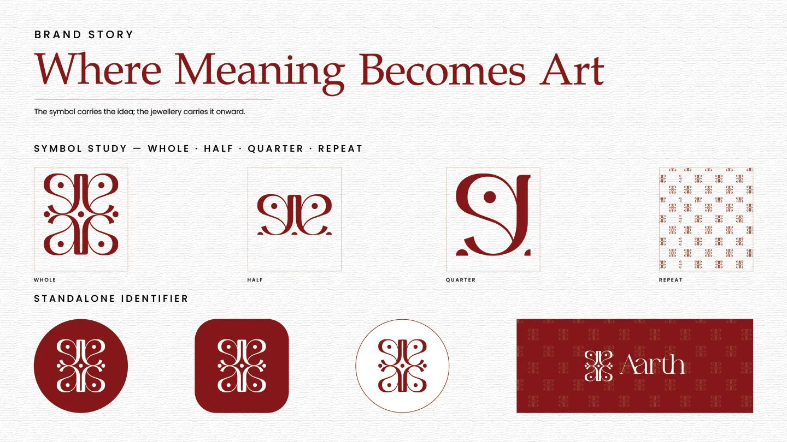
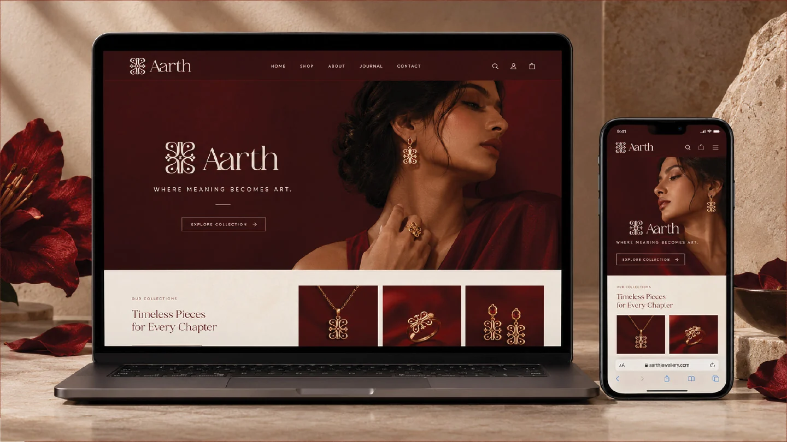

Selected work04 / 05
Aarth
Where Meaning Becomes Art.
- Category
- Brand Identity & Packaging
- Scope
- Symbol and wordmark, pattern, packaging, website, social media
- Colours

The symbol carries the idea; the jewellery carries it onward.
Symbol


Colour palette
- Burgundy#850000
- White#FFFFFF
Typography
- Aulane Demo
Pattern

Packaging

Digital applications


Social media